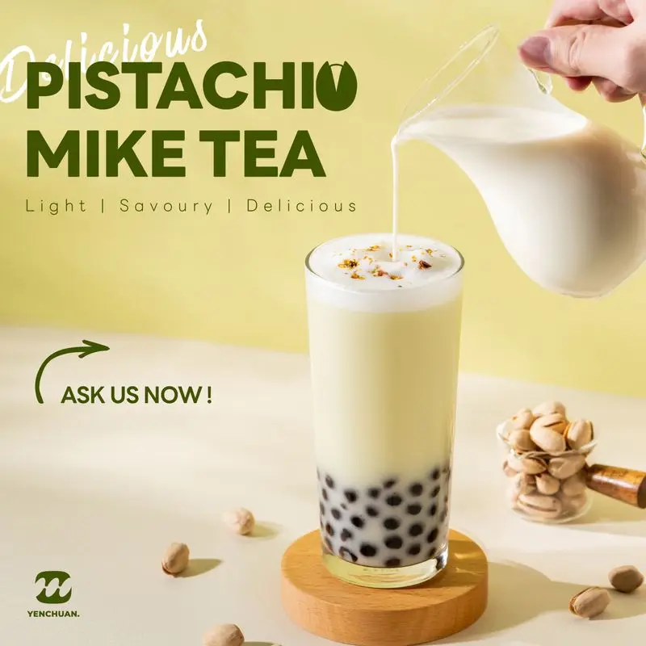

Taiwan manufacturer · In-house lab & R&D
Your R&D partner for bubble tea and sweet beverages
From new flavours and OEM formulas to the ingredients your shop needs every day — developed in our own lab in Kaohsiung.
How R&D works
Your own product in 5 steps
- 1Enquiry
Tell us the drink, flavour or product you have in mind.
- 2Details
Our lab team confirms taste, texture, packaging and volume with you.
- 3Samples
We make samples in our own lab for you to test.
- 4Quotation
You get a quote based on the final formula and order size.
- 5Order
We produce, pack with your branding if needed, and ship.
Custom flavours
Taste, aroma and texture of our powders and syrups can be adjusted.
Custom branding
Your logo on cups, holders, labels and more.
New products
Have an idea for a new flavour or product? We help you make it.
Made with our products
Popular drinks — learn how to make them

Sapphire Mango Punch

Sakura Matcha Boba Milk
308 products
Everything for your menu
 Powders
Powders Packaging
Packaging Others
OthersWant to open a bubble tea shop?
We support you from recipe to opening day
- 1Machinery matters
Learn how to use your tools of the trade.
- 2Know your ingredients
Tea leaves, toppings and more.
- 3Barista 101
Learn how to brew various bubble teas.
- 4Setting up shop
From budgeting to menu design.
Articles
Latest from Yen Chuan
Choosing tapioca pearls for your shop: dried, frozen or instant?AI-drafted (demo) · 2026-11-13From idea to your own product: how custom flavour development worksAI-drafted (demo) · 2026-11-13Building a syrup menu: 16 classic syrups and how shops use themAI-drafted (demo) · 2026-11-13 RTD Protein Manufacturing: Pilot to Full-Scale OEMBusiness & sourcing · 2026-06-09
RTD Protein Manufacturing: Pilot to Full-Scale OEMBusiness & sourcing · 2026-06-09 Direct-from-Factory Boba Supply Saves 20-40%Business & sourcing · 2026-06-04
Direct-from-Factory Boba Supply Saves 20-40%Business & sourcing · 2026-06-04 Bubble Tea Ingredient Shelf Life & Storage GuideBusiness & sourcing · 2026-06-02
Bubble Tea Ingredient Shelf Life & Storage GuideBusiness & sourcing · 2026-06-02
RTD Protein Manufacturing: Pilot to Full-Scale OEMBusiness & sourcing · 2026-06-09Direct-from-Factory Boba Supply Saves 20-40%Business & sourcing · 2026-06-04Bubble Tea Ingredient Shelf Life & Storage GuideBusiness & sourcing · 2026-06-02Ready to start?
Tell us your country, volume and timeline — we reply within one business day.